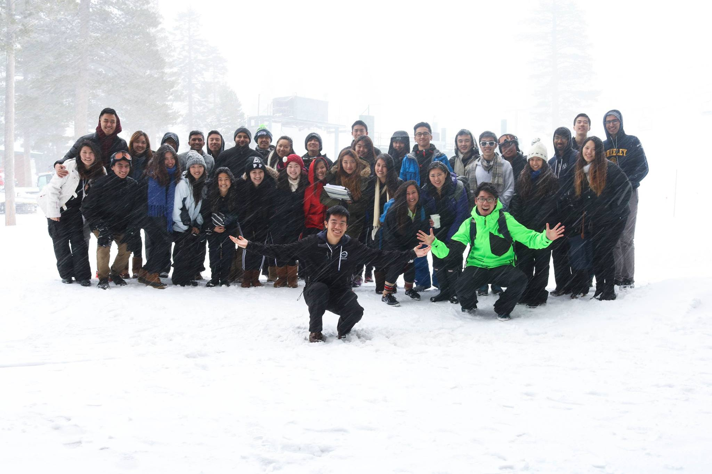
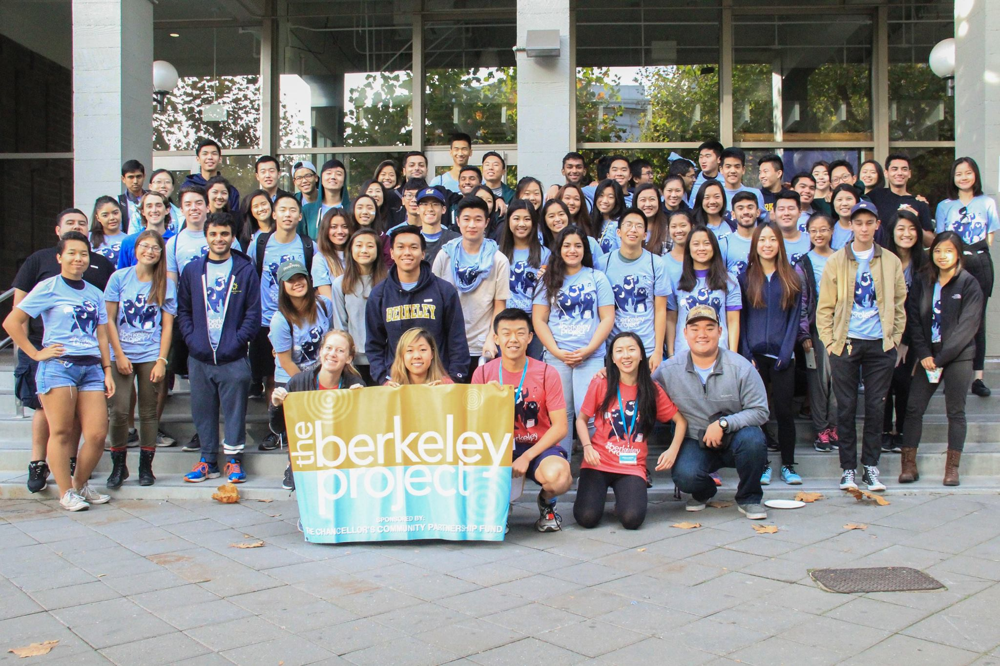
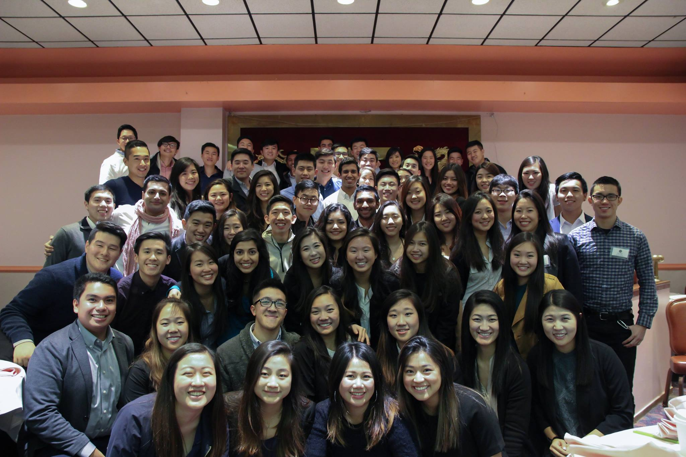

Toggle navigation
Home
About Us
Members
Contact
Careers
Berkeley ABA
The Largest Haas Sponsored Business Organization
Family

Community
ABA truly values the concept of community and many have found one within ABA. Every semester, ABA hosts several events such as pizza nights, retreats, and banquets to allow members to build upon its community and strengthen existing relationships. Because ABA is such a large organization, we have set up a “Buddy System” to help each member feel right at home. Members are placed into Buddy Groups, each of which is headed by a unique member of Cabinet, where they have the opportunity to meet more people and get to know one another better. As a result, many members find themselves creating lifelong friendships within ABA.
Confident
Professionalism
ABA works with prestigious companies to host workshops that help its members develop the skills to excel in today’s professional world. Career fairs, resume and interview workshops, and networking mixers are just some of the professional events that we offer. ABA has partnered with top firms including McKinsey, Deloitte, JPMorgan and Google. ABA assists members to learn more about the Haas School of Business. We also provide members with a variety of resources, including connections to our alumni. To learn more about our extensive Alumni network, please visit the Alumni page.
Giving Back

Service
ABA realizes the importance of contributing to our communities. In this effort, the Community Service Chairs host two large-scale service projects annually. This fall, our community service chairs will host a high school mentorship program, where they assist high school students with their college applications. In the spring, ABA works with the Internal Revenue Service to organize the Volunteer Income Tax Assistance (VITA) program. Our events raise thousands of dollars for charity and help hundreds of families. To learn more about the community service events that ABA offers, please visit our Philanthropy page.
Est. 1975

History
ABA was founded in 1975 by a group of students who set out to provide a bridge between the professional world and the students of the UC Berkeley campus. Over the course of its 40+ years of history, ABA has expanded its mission and now represents many diverse majors and cultures: The mission of ABA is to advance the study of business and to develop well-rounded leaders at the University of California, Berkeley. ABA promotes scholarship and leadership at the Walter A. Haas School of Business, encourages career exploration, and cultivates community-building and networking within and beyond the University. ABA emphasizes social responsibility in contemporary business practices and encourages its members to serve the local community.